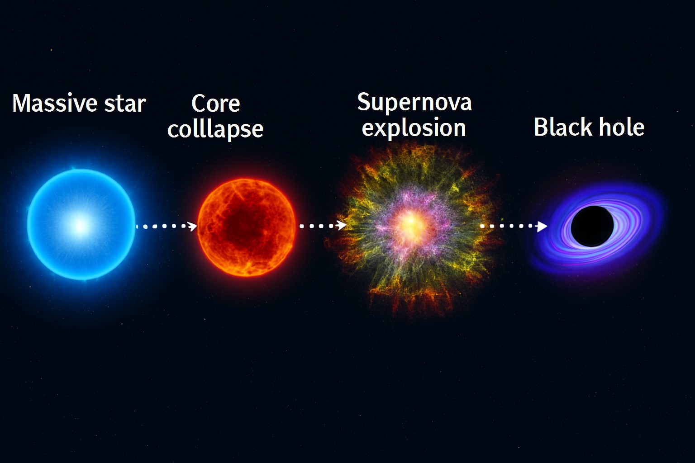

A Star Converts into a Black Hole
🌟 Life Cycle of a Massive Star
- Main Sequence Phase: A star fuses hydrogen into helium, balancing gravity with outward pressure.
- Fuel Depletion: Hydrogen runs out, heavier elements like carbon and oxygen begin to fuse.
- Iron Core Formation: Fusion stops at iron, and gravity begins to dominate.
💥 Collapse and Black Hole Formation
- Gravitational Collapse: With no fusion pressure, the core collapses rapidly.
- Supernova: Outer layers explode, briefly outshining entire galaxies.
- Direct Collapse: Some stars collapse directly into a black hole without a supernova.
- Singularity: The core becomes a point of infinite density.
- Event Horizon: A boundary forms beyond which nothing can escape—not even light.
🧠 Key Conditions for Black Hole Formation
- Mass Threshold: Stars must be at least 20–25 times the Sun’s mass.
- Core Mass: The remaining core must exceed about 3 solar masses.
- Failed Supernova: Some stars collapse silently into black holes.

🕳️ What Happens After?
- Accretion Disk: Infalling matter forms a hot, spinning disk that emits X-rays.
- Gravitational Waves: Mergers with other objects send ripples through spacetime.
- Invisible Legacy: Black holes are invisible but reveal themselves through their effects on nearby matter.